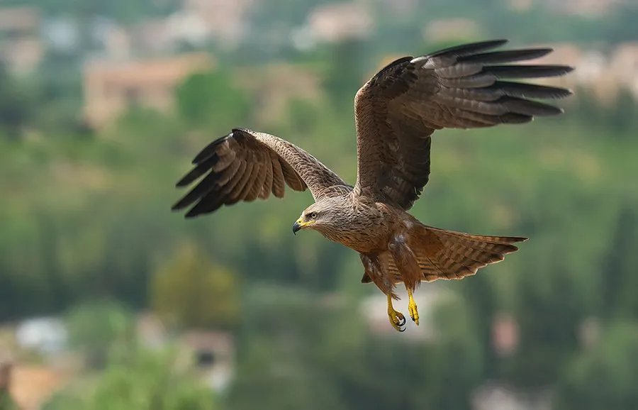

鸟类 · 动物界
黑鸢 Milvus migrans

翅下有一块明显白斑的常见猛禽，尾呈浅叉状，常集大群在城镇和垃圾场上空盘旋，是分布最广的猛禽之一。
- 分类
- 门脊索动物门纲鸟纲目鹰形目科鹰科属鸢属
- 栖息环境
- 城镇、乡村、湖泊、湿地和垃圾场附近，常在高空盘旋觅食
- 地理分布
- 欧亚大陆、非洲和澳大利亚，中国各地均有分布，多为夏候鸟或留鸟
- 保护级别
- IUCN 无危（LC）；中国国家二级保护动物
物种志
黑鸢体长 48–60 cm，体重约 630–940 g，翼展 130–155 cm。全身羽毛以褐色为主，头部颜色较浅，飞羽末端黑色，尾羽呈浅叉状，翅膀下侧靠近翼尖处有一块明显的白色斑块，是辨认它的关键特征。它的喙钩曲，脚黄色，眼睛浅褐色。
黑鸢广泛分布于欧亚大陆、非洲和澳大利亚，中国大部分地区都能见到，多为夏候鸟或留鸟。它们栖息在城镇、乡村、湖边和垃圾场附近，食性很杂，既捕食鱼、蛙、鼠类和小鸟，也大量取食腐肉和人类丢弃的食物，常成群在高空盘旋。繁殖期在树上或建筑物上营巢，每窝产卵 2–3 枚，孵化约 33–38 天。黑鸢是分布最广、数量最多的猛禽之一，目前被列为无危物种，在中国属于国家二级保护动物。
形态与习性
- 食性鱼、蛙、鼠类、小鸟，也大量取食腐肉与人类丢弃的食物
- 体长48–60 cm
- 体重约 630–940 g
- 翼展130–155 cm
- 繁殖每窝 2–3 枚卵，孵化约 33–38 天
- 寿命野外约 15–20 年
- 羽斑翅下靠近翼尖处有明显的白色斑块
趣味知识
- 黑鸢翅下靠近翼尖的白色斑块是识别它的关键特征。
- 它是分布最广的猛禽之一，从欧洲到澳大利亚都能见到。
- 黑鸢常成群在垃圾场上空盘旋，捡食人类丢弃的食物。
- 黑鸢的尾羽呈浅叉状，飞行时像一面小旗。